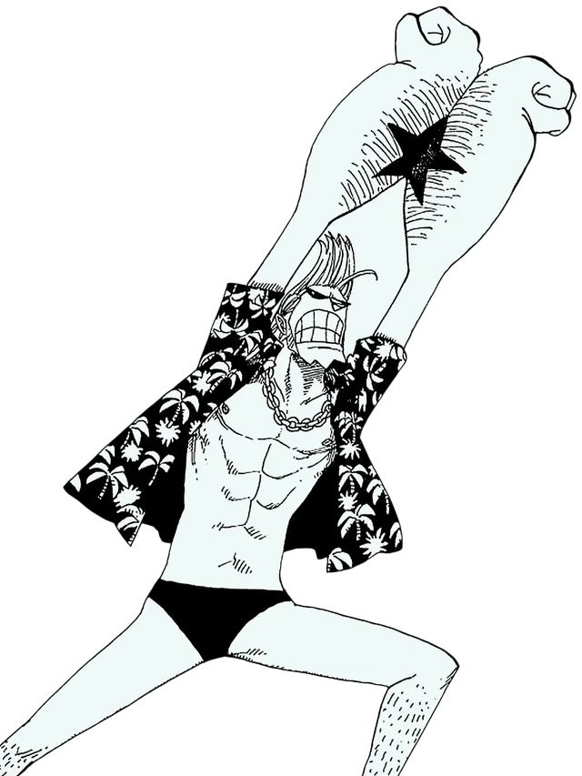

"Iron Man" Franky[7] is the shipwright of the Straw Hat Pirates and one of the Senior Officers of the Straw Hat Grand Fleet.[2] He is the crew's eighth member and the seventh to join, doing so at the end of the Post-Enies Lobby Arc.[17] Franky was born in the South Blue[18] to Scien, an infamous scientist and pirate who would later be known as Queen of the Beasts Pirates.[19] After his parents abandoned him as a 10-year-old[20], he eventually made his way to Water 7. Born "Cutty Flam",[21] he chose to go by his nickname of "Franky" until he eventually permanently discarded his true name per the request of Iceburg to hide his identity.[22] He worked as a shipwright of Tom's Workers until, during a failed attempt to save his mentor Tom from the World Government, his body was heavily damaged, requiring him to augment himself into a cyborg. Upon returning to Water 7, he became the leader of the Franky Family, a group of ship dismantlers and bounty hunters.[3] Franky and his followers were introduced as the secondary antagonists of the Water 7 Arc, until circumstances forced them to become allies at the end of the same arc and the Enies Lobby Arc. Franky's dream is to create a ship and circumnavigate the world with it, and he built the Thousand Sunny and joined the Straw Hat Pirates to fulfill his dream. He gained a bounty of Beli44,000,000 for his involvement at the Enies Lobby Incident. It later increased to Beli94,000,000 after the Dressrosa Arc. Following the Raid on Onigashima, his bounty was increased to Beli394,000,000.[2]
For more info visit this page